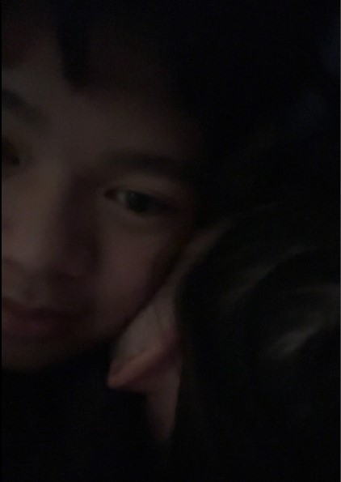
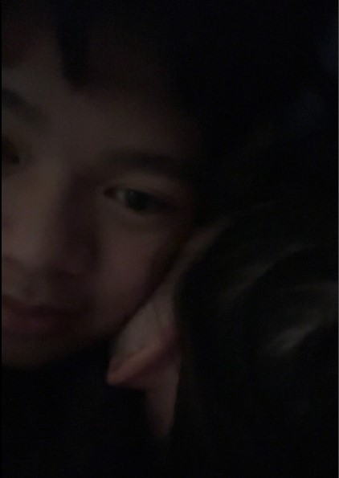

Introduction
Welcome to a special website dedicated to the most amazing person, NICOLE!!!!.
Timeline
We met on an NCEA discord server where she added me, and I accepted it, then we started talking. We went from acquaintances, to friends, to best friends then we stopped talking. Became best friends again, then we started talking more and more, it became a situationship. We flirted more and more, then I asked her out where i made her a ribbon rose bouquet and a letter where she hugged me, which made me confused if she said yes or no. I asked her if she did want to be my girlfriend, she nodded and i couldnt tell if she nodded, so I made sure i heard a yes from her.
During the first month
During our month together, NGL I WAS SUPER AWKWARD. I DIDNT KNOW HOW TO REACT AFTER I GOT HOME. Because I did not een expect you to say yes to me HAHAHA. Anyways during the first month, we had our ups and downs, we learnt a lot from each other with built out relationship. Especially doing the questions (we need to do more we've barely done any this second month), learning more about each other which I thought was interesting and taught me how to love you much much better.
A MONTH LATER...
After our one month anniversary, I cried on what she gave me as a one month present because it was actually so thoughtful. So I had to think of something to top that and I thought of THIS!! But after a month, me and her started to get more comfortable with each other, and yk... HAHAHAH. We became more closer and communicated much better, and now we're in the healthiest relationship ever and still continuing. We've been so busy lately because we are absolute academic weapons. But I cant wait to meet you in two weeks my princess.
Gallery
Me tweaking out/crushing on you whilst we were still friends (Im afraid of women
My favourite pphotos of you
Meeting up for the first time as friends
Asking you out
 

Favourite date photos
Favourite moments on call
Best Evergreen chat logs
Favourite Snaps of you
Favourite Spotify Songs you sent me
Favorite Quotes
“I love your voice”
“Lets egg someones house babe”
“Insert Random Dirty Joke”
“What are you eating”, she says "Zongzi"or "Soup
“I HATEEE PHYSICS”
“I MISS YOU SM”
“I want you”
“I need you”
“You remind me of...”
“Im so tired, I need you”
“WANNA CALL?????”
“Can we...(hehe)”
Last but not least, "I LOVE YOU”
Stuff About My GF
Full Name: Nicole (Yue) He
Birthday: 25th February 2007
Height: 5'6" (swear she isn't)
Starsign: ♓️ Pisces
Hair colour (She changes it when she's bored of her appearance):
Currently (28th of April): Faded Blue, Blonde, Greenish, Black
(5th of May): Purplish Brown
Favourite Colour: Green and Purple
Favourite Food: Soup
Second Favourite Food: She still loves soup
Favourite Fruit: Probably Mangosteen or anything tbh
Second Favourite Fruit: Blackberries
Favourite Vegetable: Cabbage
Second Favourite Vegetable: Tomato
Favourite Drink: Oolong milk tea
Favourite Flowers: Peonies
Dream Place to go to: Norway (with me), Switzerland or Rome
Favourite Place: China or Me
Career growing up: Going to major in accounting with me and then make some hella bags (we gon be hella rich, new money type shi)
Favourite Artists: Lil Peep, Ethel Cain, Braekence, Sourfall, Lil Tracy, Juice Wrld, XXXTentacion, Destroy Lonely, Pierce The Veil, Deftones, Waterparks, Bladee.
Favourite Song: Stupid 4 you - Waterparks
Favourite Season: Fall
Collect the Hearts!
Hearts collected: 0